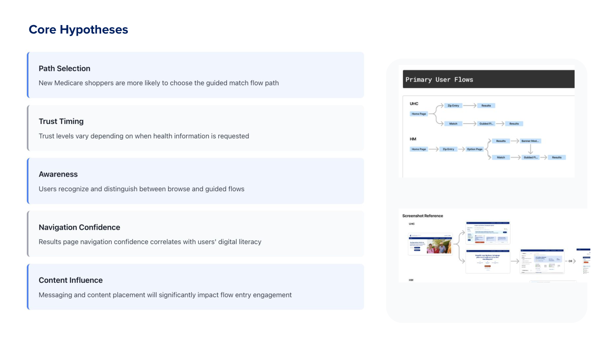
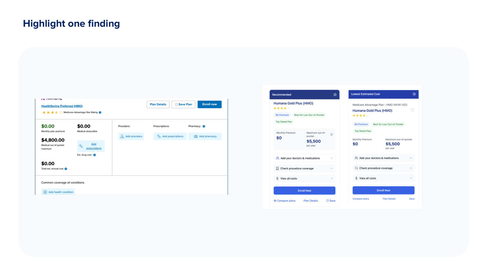
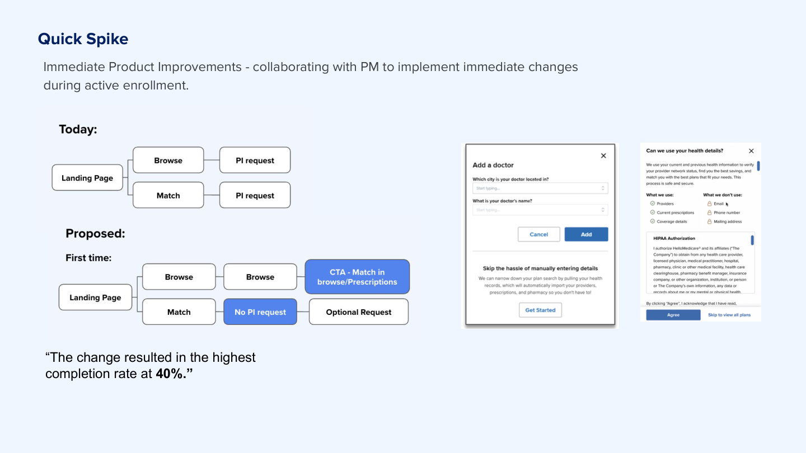
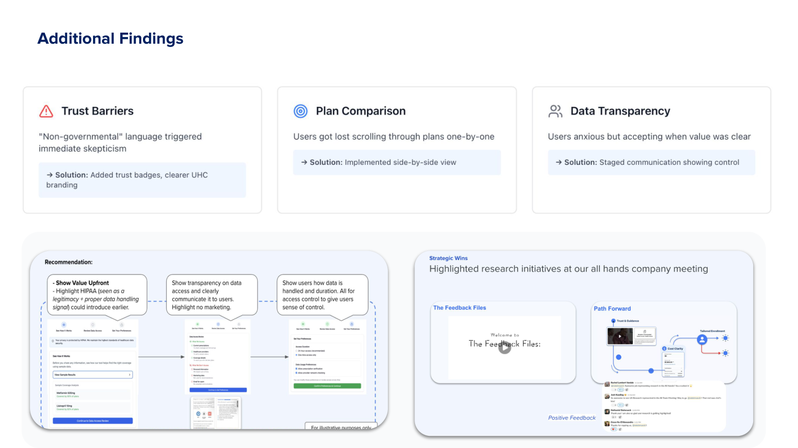

← Back to Work
Improving Shopping for Medicare
Improving online enrollment and driving higher conversion
The Problem
51%
Drop-off at personal information page
During the critical Annual Enrollment Period—meaning lost enrollments, wasted marketing spend, and missed revenue
Research Approach
📊 Site Data Analysis
- Analyzed 2024 Annual Enrollment Period data to identify patterns
- Evaluated both UHC and HelloMedicare data
- Identified drop-off points
- Generated testable hypotheses
👥 Moderated Testing
- 15 participants (age 65+)
- Tested live enrollment flows across three websites
- HelloMedicare, UHC, and eHealth (competitor)
- Live websites in production
Core Hypotheses
Path Selection
New Medicare shoppers are more likely to choose the guided match flow path
Trust Timing
Trust levels vary depending on when health information is requested
Awareness
Users recognize and distinguish between browse and guided flows
Navigation Confidence
Results page navigation confidence correlates with users' digital literacy
Content Influence
Messaging and content placement will significantly impact flow entry engagement
Key Finding
Users needed to browse BEFORE sharing personal information
Despite our assumption that a guided "match" flow would help users, 11 out of 15 participants preferred exploring plans first—typical shopping behavior we'd overlooked
Evidence
11/15 participants preferred browsing first
Impact
Personal info request was creating immediate barrier to entry
Recommendation
Delay PI request; add browse CTA
"I need to see what's out there before I give you my information. How do I know this is worth my time?"
— Participant quote
Rapid Response: Quick Spike
Immediate Product Improvements - collaborating with PM to implement immediate changes during active enrollment.
The Pattern
During week 2 of testing, the pattern was clear across participants
Emergency Session
I convened an emergency meeting with PM and designer. We were mid-enrollment—every day mattered.
The Change
Within 24 hours: prototyped, validated, and shipped the flow change
40%
Completion rate achieved
74% relative improvement
Additional Findings
Trust Barriers
"Non-governmental" language triggered immediate skepticism
→ Solution: Added trust badges, clearer UHC branding
Plan Comparison
Users got lost scrolling through plans one-by-one
→ Solution: Implemented side-by-side view
Data Transparency
Users anxious but accepting when value was clear
→ Solution: Staged communication showing control
Impact
74%
Relative improvement
(from 23% to 40%)
4
Major features shipped
During enrollment
Delayed PI Request Until After Browse
Aligned with natural shopping behavior—users explore first, commit later
Enhanced Trust Signals
Added trust badges and clearer UHC branding to address skepticism
Side-by-Side Plan Comparison
Reduced scrolling frustration and improved decision-making
Improved Cost Transparency
Made total costs clearer upfront to build confidence
Reflection
What Worked
Rapid iteration with PM and designer during active testing prevented costly feature bloat and enabled immediate course correction
What I'd Do Differently
Establish clearer baseline metrics before testing. The 40% completion rate is directional, but attribution is complex due to concurrent enrollment period changes
Key Insight
In high-stakes domains like Medicare, trust signals and respecting natural shopping behavior matter more than feature richness